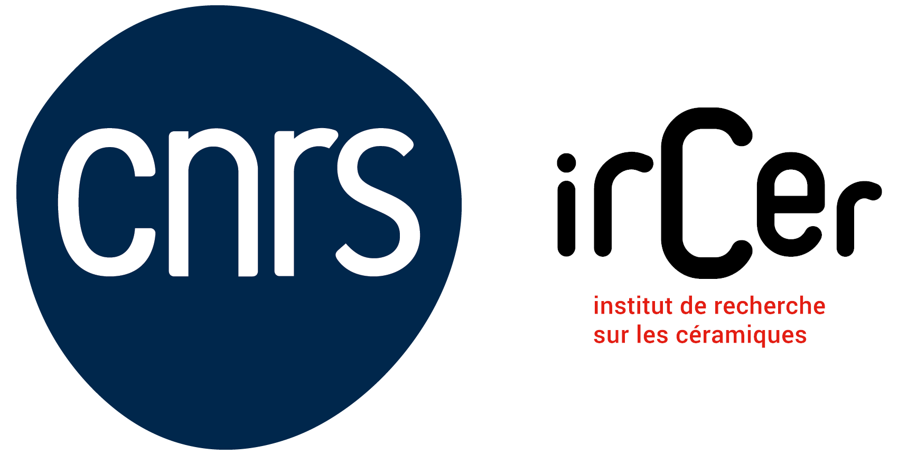

CNRS researcher · IRCER · Limoges
Atomic-scale modeling and AI for materials science
Welcome to my personal webpage. Here you can explore my research in computational materials science, including my publications, projects, teaching and supervision, collaborations, and recent academic activities. My work at the Institut de Recherche sur les Céramiques (IRCER) combines atomistic modeling and data-driven approaches to understand and design complex materials, with a particular focus on glasses, ceramics, electrochemical interfaces, catalysis, and energy-related systems.

Research overview
My research combines density functional theory, first-principles molecular dynamics, machine learning, and high-throughput computation to uncover structure-property relationships in complex and disordered materials.
I am especially interested in glasses and glass-ceramics, oxide and chalcogenide systems, electrochemical interfaces, catalytic materials, and emerging high-entropy ceramics for energy applications.
Highlights
Research themes
Disordered materials and glasses
Atomic-scale modeling of oxide, chalcogenide, and glass-ceramic systems to understand structure, bonding, dynamics, and functional properties.
Electrochemical interfaces
First-principles investigation of solid-liquid interfaces, electrocatalysis, and electrode processes relevant to energy conversion and storage.
AI for materials discovery
Machine learning, active learning, and automated workflows for the design and optimization of advanced ceramics and energy materials.
Current directions
High-entropy ceramics
Automated and machine-learning-driven design of high-entropy ceramics for energy applications, including predictive workflows for structure, stability, and performance.
Read moreMachine-learned interatomic potentials for complex amorphous materials
Developing machine-learned interatomic potentials to simulate complex amorphous materials at larger scales, investigate their microstructures, and establish links between atomic-scale organization and functional properties.
Read more